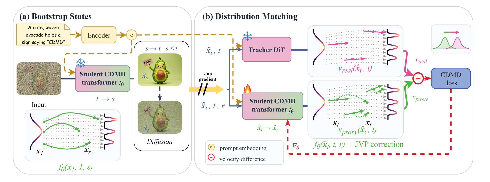
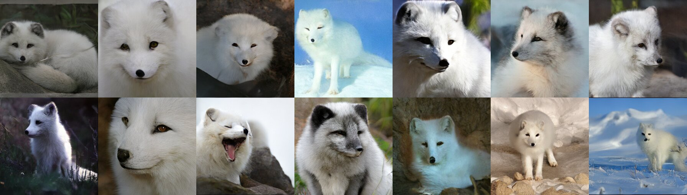
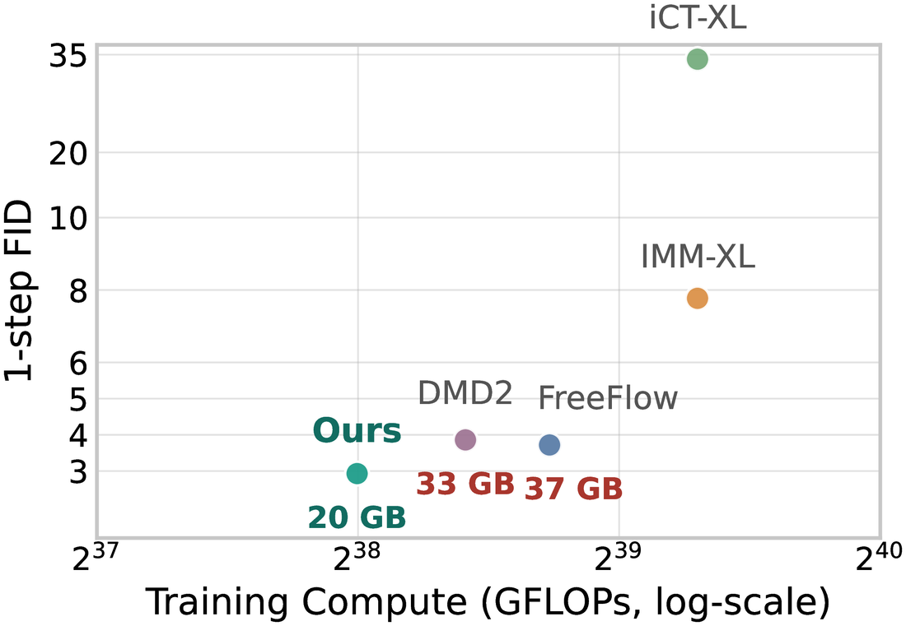
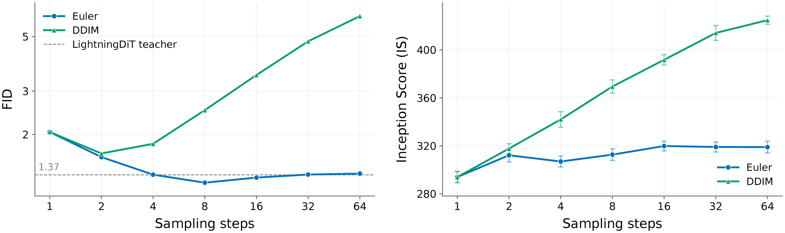

No distillation dataset. Training states are bootstrapped from the student itself.
No teacher rollouts. Each state costs one student pass plus analytic noising.
A frozen teacher and a student. No fake score network, no GAN. 20 GB vs. 33–37 GB.
FID 2.04 in one step and 1.37 in four on ImageNet 256×256, from the same student.
Flow and diffusion models suffer from slow inference due to computationally expensive numerical integration. Distillation provides a promising way for a student model to learn from a teacher's dynamics, enabling one-step or few-step generation. However, existing methods often depend on curated distillation datasets, costly teacher rollouts, or auxiliary proxy networks, which complicate model training and scaling.
In this work, we propose Consistent Distribution Matching, a simulation-free and data-free distillation method for accelerating diffusion and flow models while preserving strong generative capacity. Our key insight is to unify sample generation and score estimation with one student network. Thus, our framework uses only two models, a frozen teacher and a trainable student, and optimizes one objective. We prove that minimizing our objective indicates Wasserstein convergence of the student flow-map pushforwards to the teacher marginals. On ImageNet 256×256, our method attains an FID of 2.04 with a single function evaluation (1-NFE) and a 4-NFE FID of 1.37 within 40 epochs of training, surpassing the state-of-the-art distillation baselines without data.
Data-based distillation trains the student on noised data according to a prescribed forward path, but those states are not the ones the teacher visits when it generates. Simulating the teacher model fixes the mismatch, at a high price. CDMD needs neither: one student network is both the few-step generator and the estimator of its own velocity, so training involves only the frozen teacher and the student.
All three push the student \(q_t\) toward the teacher \(p_t\). The difference is where the fake term comes from.
\(s_{\text{fake}}\) requires training a third model by score matching.
\(\nabla\log q_t\) requires training a third model by score matching.
\(v_{\text{fake}}\) comes from the student itself. No third model.
DMD: Yin et al., Improved Distribution Matching Distillation for Fast Image Synthesis, 2024. SiD: Zhou et al., Score identity Distillation, 2024. The score and velocity forms of these divergences are equivalent up to a time-dependent weight (see the paper's appendix).

Jump from noise to time \(s\) with the student, then renoise to \(t\):
One student pass per state: no data, no teacher rollouts.
Regress the student's fake velocity onto the teacher's:
One JVP per step. Sample in one or a few steps.
Under regularity assumptions, and provided the student's training states cover the teacher's path, we prove two results.
| Method | # Models | # Optimizers | Data-free | Simulation-free | No GAN |
|---|---|---|---|---|---|
| BOOT | 2 | 1 | ✓ | ✗ | ✓ |
| DMD2 | 3 | 2 | ✓† | ✓† | ✗† |
| SiD-LSG | 3 | 2 | ✓ | ✓ | ✓ |
| SiDA | 3 | 2 | ✗ | ✓ | ✗ |
| FreeFlow | 3 | 2 | ✓ | ✓ | ✓ |
| CTM | 3 | 2 | ✗ | ✓ | ✗ |
| FACM | 2 | 1 | ✗ | ✓ | ✓ |
| MeanFlow / CM / IMM | 2 | 1 | ✗ | ✓ | ✓† |
| CDMD (ours) | 2 | 1 | ✓ | ✓ | ✓ |
† depends on the training setup. A GAN objective needs real data for its discriminator.
Uncurated samples from the CDMD student distilled from LightningDiT-XL/2, generated without classifier-free guidance, so each step is a single network evaluation (1 step = 1 NFE). Multi-step samples use the Euler sampler.

Arctic fox · 1 step (1 NFE) · uncurated
| Method | NFE | FID ↓ | IS ↑ |
|---|---|---|---|
| Teacher | 250×2 | 1.35 | 295.3 |
| FreeFlow | 1 | 4.28 | 264.9 |
| DMD2† | 1 | 3.43 | 317.2 |
| MFD† | 1 | 6.67 | 281.6 |
| MeanFlow☆ | 1 | 4.19 | 213.8 |
| sCM☆ | 1 | 4.21 | 266.9 |
| FACM☆ | 1 / 2 | 2.15 / 1.79 | 303.8 / 319.6 |
| CDMD (ours) | 1 / 2 / 4 | 2.04 / 1.62 / 1.37 | 294.3 / 317.3 / 306.9 |
| Teacher | 250×2 | 2.06 | 277.5 |
| DMD2† | 1 | 3.93 | 273.2 |
| FreeFlow w/o DMD | 1 | 14.5 | 182.4 |
| FreeFlow | 1 | 4.13 | 268.7 |
| MeanFlow☆ | 1 | 4.07 | 251.5 |
| CDMD (ours) | 1 / 2 | 3.47 / 2.87 | 251.4 / 271.0 |
| Teacher | 250×2 | 1.31 | 309.7 |
| DMD2† | 1 | 3.86 | 239.1 |
| FreeFlow w/o DMD | 1 | 15.4 | 171.3 |
| FreeFlow | 1 | 3.72 | 266.4 |
| MeanFlow☆ | 1 | 4.47 | 214.5 |
| CDMD (ours) | 1 / 2 | 2.93 / 2.60 | 286.4 / 272.8 |
Data-free distillation on class-conditional ImageNet 256×256 under matched training budgets. † reproduced by us; ☆ adapted by us to the data-free setting.

FID-50K on ImageNet 256×256, LightningDiT-XL/2 teacher.

CDMD learns the average velocity \(u_\theta(x_t,t,r)\) over any time interval \([r,t]\), not only from pure noise to data. The student can therefore jump from noise to an image in one step, or split the trip into shorter jumps by chaining its own flow map over consecutive intervals:
Each jump is one network evaluation, and no retraining is needed to change the number of steps.
| Model | NFE | Aesthetic ↑ | PickScore ↑ | HPSv2 ↑ | ImageReward ↑ | CLIPScore ↑ | FID ↓ |
|---|---|---|---|---|---|---|---|
| SANA teacher | 20 | 6.335 | 0.2021 | 0.2417 | 0.8363 | 30.717 | 30.39 |
| SANA teacher | 4 | 5.976 | 0.1872 | 0.2173 | −0.1008 | 28.251 | 35.65 |
| SenseFlow | 4 | 6.482 | 0.1998 | 0.2445 | 0.7925 | 29.321 | – |
| AYF | 4 | 6.231 | 0.1963 | 0.2298 | 0.7022 | 29.176 | – |
| Diff-Instruct | 4 | 6.453 | 0.1985 | 0.2434 | 0.7677 | 29.393 | – |
| Consistency Distillation† | 4 | 6.248 | 0.1906 | 0.2263 | 0.6743 | 28.890 | 54.38 |
| DMD2† | 4 | 6.489 | 0.2006 | 0.2439 | 0.8042 | 29.103 | 32.34 |
| MFD† | 4 | 6.541 | 0.2002 | 0.2442 | 0.8483 | 29.430 | 28.77 |
| CDMD (ours) | 4 | 6.906 | 0.2011 | 0.2387 | 0.8864 | 28.992 | 27.83 |
Bold marks the best learned 4-NFE result; † reproduced by us. FID against COCO-5K 2017. CDMD trains in about 7 GPU hours, vs. 22 for Diff-Instruct, 25 for MFD and 30 for DMD2.
@article{fu2026cdmd,
title = {Consistent Distribution Matching for Data-Free Diffusion Distillation},
author = {Fu, Yuxiang and Yan, Qi and Wu, Zike and Zhang, Yongxing and
Abolmaesumi, Purang and Wang, Lele and Liao, Renjie},
journal = {arXiv preprint},
year = {2026}
}